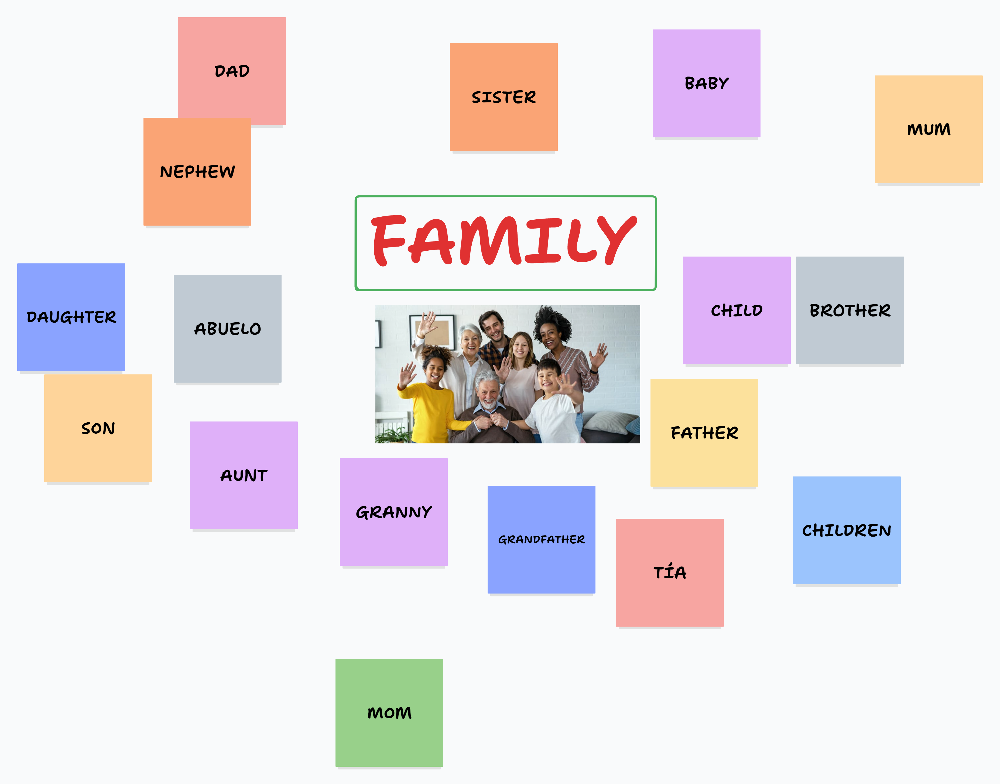
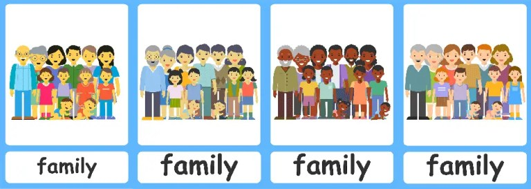
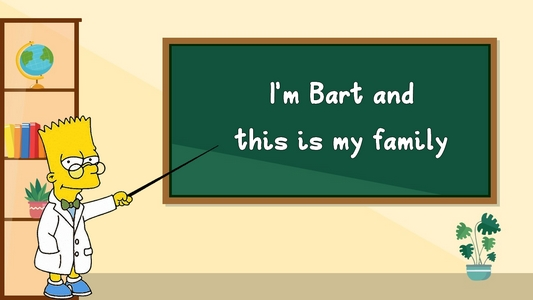

RESOURCES
| Using digital app: Tldraw example of words related to “Family” mentioned by students after providing QR code. | |
|---|---|
|  | |
| Only image version: due to Resolution No. 631 (“Protocol for the Use of Mobile Devices in Schools”). | |
|
Extended family representation (MiWayLife, 2023) |
The image is placed on the white board, you can use the same photo or another one, A4 or A3 format. Ask students to mention words related to “Family” (written above). Same technique as the digital app. Arrows or making a list is also another technique. |
| Lyric of the video “Describing my family members”. https://www.youtube.com/watch?v=PTdkO9mrzdQ | Suggested flashcards for family members not mentioned in the video. |
|
Key words from the lyrics have been highlighted to emphasize repetition. Write them on the whiteboard to help students remember the structure. Hello kids Today we are going to describe family members This is my mom She's tall and thin My mom has blue eyes and red hair My mom is beautiful This is my dad He's short and chubby My dad has brown hair and black eyes My dad is very handsome These are my grandparents They are old This is my baby brother He is young Well kids I described my family Can you describe your family too? Well done! You did a great job today I'll see you in the next class, goodbye everybody |

Family flashcards (Flashcards for Kindergarten, n.d.). |
|
Suggested flashcards for adjectives used to describe people. |
|

Describing flashcards (British Council, n.d.). |
|
| Game: “My family” for the “Guided Practice” stage. (See Lesson sequence, p.4) | |
|
Instructions:
|
 No Internet connection:
|